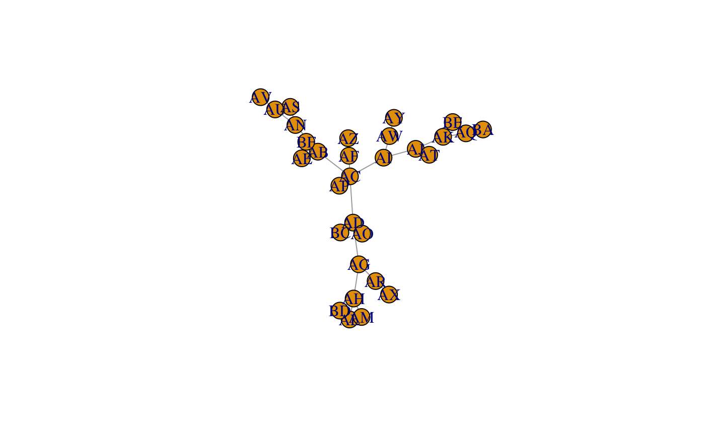
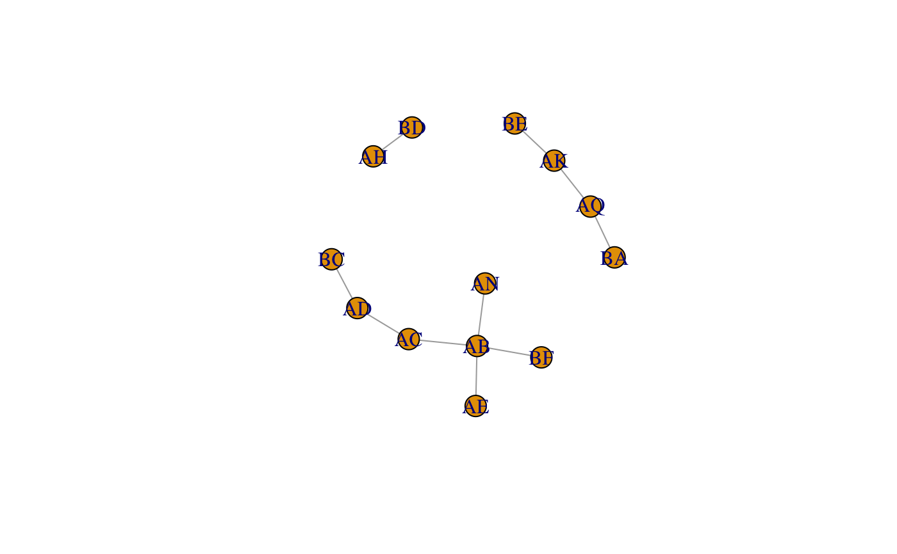

Using the 'tidygraph' functions map_local_*(), it is easy to scan the
neighborhood of all the nodes in a graph. This function takes a logical
filter expression to apply on the node attributes of a graph, and returns the
number of neighbors that qualify.
num_qual_neighbors(neighborhood, lgl_filter, ignore_nodes = c(), ...)
| neighborhood | passed by the |
|---|---|
| lgl_filter | an expression to apply to the node attributes of
|
| ignore_nodes | nodes to exclude from the filter (use the |
| ... | just takes any other arguments passed automatically by
|
an integer of the number of nodes that qualify for each neighborhood
#> # A tbl_graph: 30 nodes and 29 edges #> # #> # An undirected simple graph with 1 component #> # #> # Node Data: 30 x 1 (active) #> name #> <chr> #> 1 AB #> 2 AC #> 3 AD #> 4 AE #> 5 AF #> 6 AG #> # … with 24 more rows #> # #> # Edge Data: 29 x 2 #> from to #> <int> <int> #> 1 1 2 #> 2 2 3 #> 3 1 4 #> # … with 26 more rowsplot(gr)# number of neighbors with a "B" in their name B_gr <- gr %>% mutate(name_with_B = map_local_int( .f = num_qual_neighbors, lgl_filter = rlang::expr(stringr::str_detect(name, "B")) )) B_gr %N>% filter(name_with_B > 0) %>% plot()